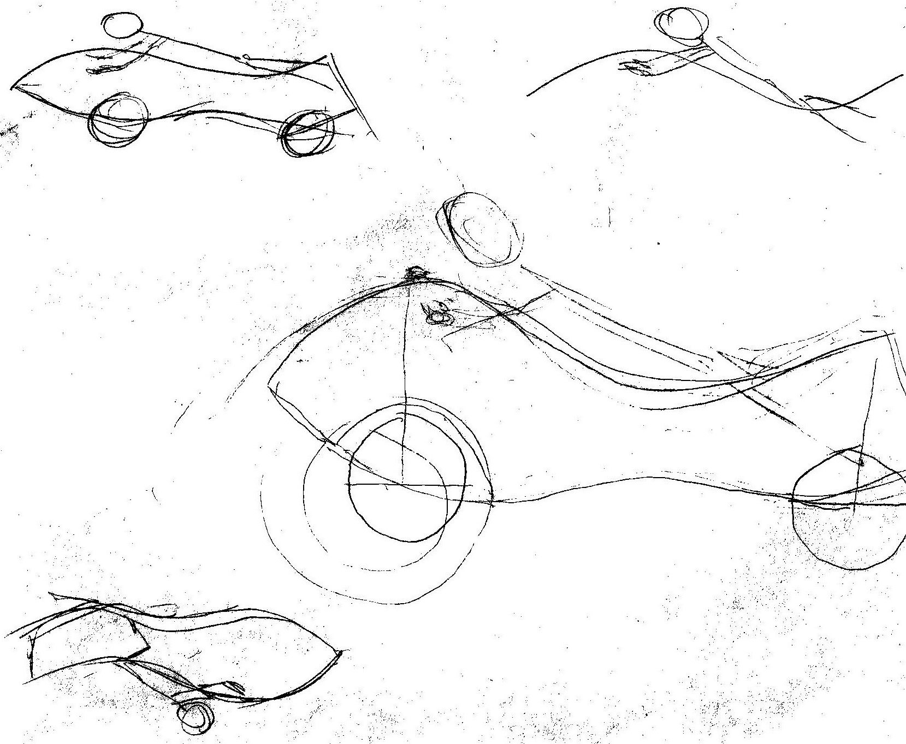
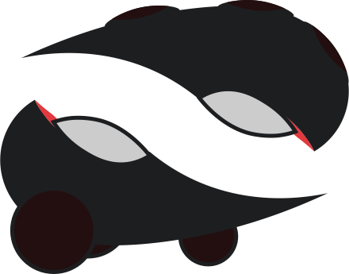
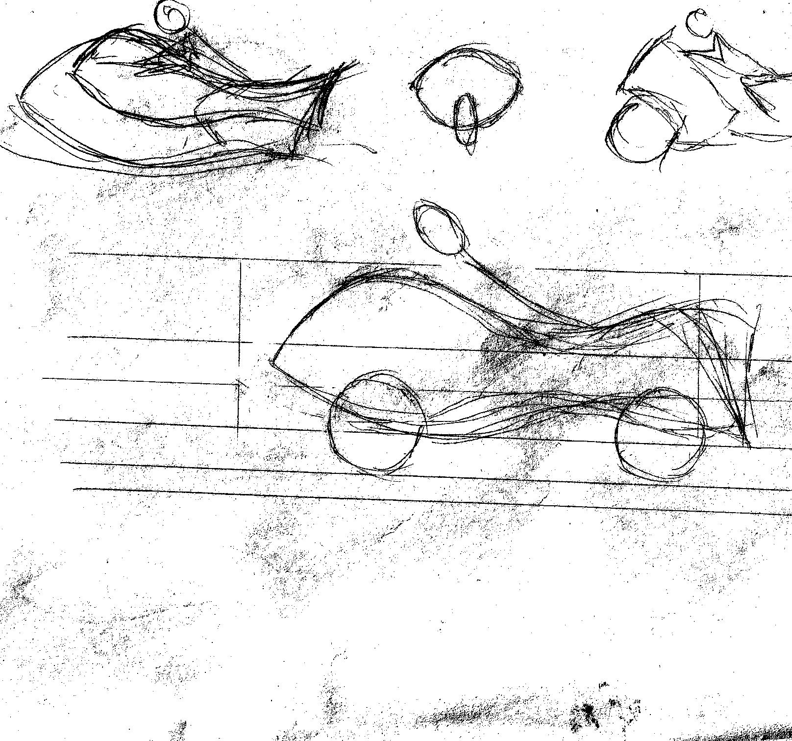
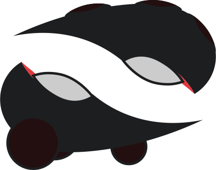

Date: January 2011

Motorcycle 

Date: January 2011
Date: January 2011
Motorcycle 
Date: January 2011
This motorcycle full copy from nature and world physics. I really prefer something that have similarity with nature.
I copy this to minimum air resistance to make possibilities to maximum speed and maneuverability. I do not think about motor and engine because I have two thoughts about it.
Firstly, it may be on renewable energy. Second, it may be on simple electricity. Third, that I imagine may be true and I believe it, transporting on magnetism.
I think about conceptual design that may be helpful and useful in most of all.
Now I want to compare different types of modern design and nature evolution.
My predictions for these projects. It may start after my automobile and work with AI. I think and predict, that cars come to automatic driving and most of racers comes to motorcycles.
I really think about safety of owner and about speed. I think it is the most valuable characteristics for this extremal type of driving.
There are big different and I cannot think about how much does it cost. It may be
Cost: 100 000 – 10 000 000 $
Time: 1 to 5 years.
Predictions of human bad:
Cost: 540 000 – 95 000 000 $
Time: 2 to 5,5 years.
It is predictions for real starting manufactory, build technical way of creating and many failures in process of prototyping. It is only if we have experience with transport creating.
There are small description about my project, I cannot show all in WorldWideWeb at the moment